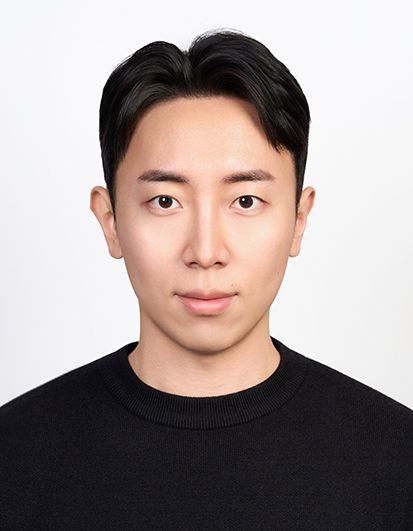

PreprintarXiv, June 2026 · under review
Postdoctoral Researcher, PI Lab, Seoul National University
I reconstruct dynamic 3D scenes from ordinary videos, and I'm now using those representations to help embodied agents understand and act in the world.

I am a postdoctoral researcher at PI Lab, Seoul National University, working with Prof. Youngjae Yu on world action models and vision-language-action models for embodied agents.
I received my Ph.D. in Electrical Engineering from KAIST in 2026, advised by Prof. Munchurl Kim at VICLAB. My research centers on 3D scene reconstruction with neural radiance fields and 3D Gaussian splatting: real-time dynamic 3D Gaussians from monocular video, robust reconstruction from blurry footage, and efficiency-controllable feed-forward 3D Gaussian splatting from multi-view images.
* equal contribution


Education, publications, research projects, and patents in one PDF. Last updated September 2026.
I'm happy to talk about collaborations on dynamic 3D reconstruction, feed-forward Gaussian splatting, or embodied AI.